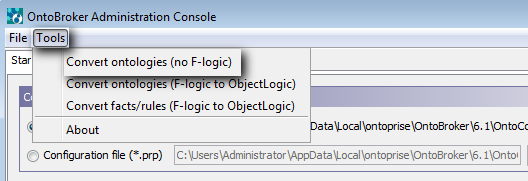
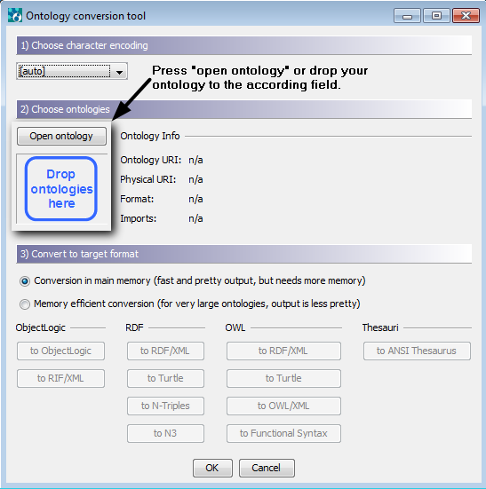
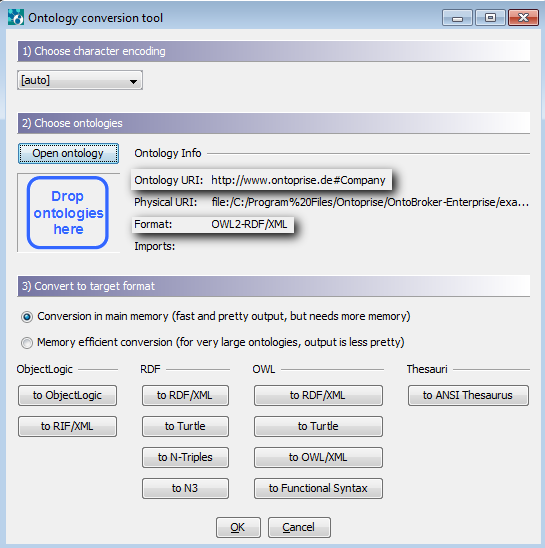
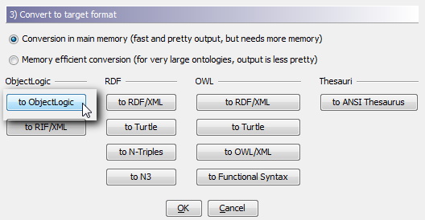
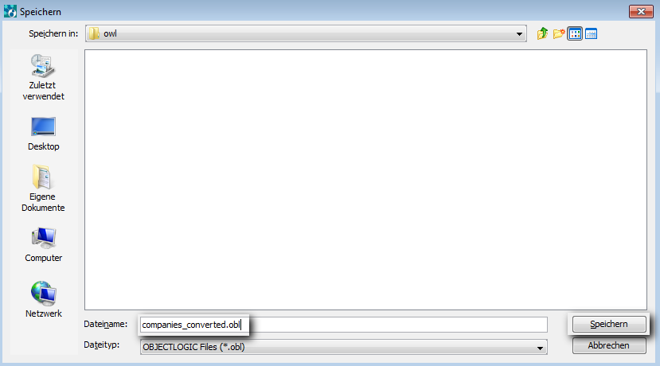
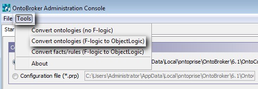

|

|
|
Converting Ontologies |
|
|
|
|
Converting Ontologies |
OntoBroker provides an easy and manageable way of converting ontologies to different formats.
| 1. | Start the OntoBroker GUI by clicking on: Start -> Programs -> OntoBroker -> OntoBroker Administration Console. |
| 2. | From the top level menu select: Tool -> Convert ontologies. |

The "Convert Tool" of OntoBroker opens.
| 3. | Add the ontology to be converted using the dialog box or using drag&drop: |

After adding the ontology, basic information on the ontology is displayed:

| 4. | Choose the output format. |
Keep in mind that cardinalities differing from (0,1) and (0,*) are not supported by F-logic and will get lost during conversion. Rules, queries and mappings are not supported by owl and rdf(s) and will thus not be retained. Furthermore cardinalities and symmetric, inverse and transitive relations are not supported by RDF(S) and will also not be retained.

| 5. | Choose a name for the converted ontology and click on Save. |

The ontology will be converted and saved in the specified folder with the chosen filename.
NOTE: If the conversion causes problems or information gets lost, you will be informed in the Messages window at the bottom end of the conversion tool.
ANSI Thesaurus export
This functionality can be triggered using the Ontology Conversion Tool.
| • | The target format should be an ASCII file (or UTF-8 for special characters) with extension .ansi |
| • | The first line should contain a supplier ID such as: |
SID ontoprise
where only alphanumeric characters, _ and - are allowed in the single word supplier ID (SID).
| • | As blanks are not allowed neither in the SID, nor in URLs they will be replaced with _ |
| • | Double quotes are also not allowed and will also replaced with _ |
F-logic to ObjectLogic conversion
To convert old F-logic ontologies to ObjectLogic proceed in the following way:
| 1. | Start the OntoBroker GUI by clicking on: Start -> Programs -> OntoBroker -> OntoBroker Administration Console. |
| 2. | From the top level menu select: Tool -> Convert ontologies/fact/rules (F-logic to ObjectLogic). |

The "Convert Tool" of OntoBroker opens.
Proceed in the same way as for the other conversion process described at the beginning of this chapter.